第8章 纯物质的体相性质
约 2559 个字 12 张图片 预计阅读时间 38 分钟
第一节 经典气体理论
1.1 定性模型
-
\(r_{分子}<<d_{分子}\)
-
无分子间相互作用，弹性碰撞
-
气体分子处于无休止运动
1.2 定量模型
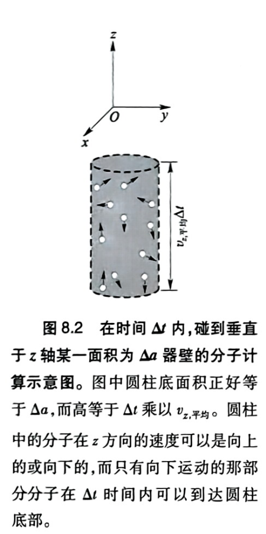
根据牛顿定律：
\[
F=\frac{\Delta(m\vec{v})}{\Delta t}
\]
单个分子碰撞器壁产生的压强：
\[
P_1=\frac{F_x}{a}=\frac{2m\overline{v}_x}{\Delta t\cdot a}
\]
在 \(\Delta t\) 时间内，撞击面积 \(a\) 的分子数为：
\[
N_{\text{撞}}=\frac{1}{2}\big(\overline{v}_x\Delta t\cdot a\big)\cdot \frac{nN_{\text{A}}}{V}
\]
总压强等于单个分子压强乘以撞击分子数：
\[
\therefore P = P_1 \cdot N_{\text{撞}}
\]
\[
P=\frac{N_{\text{A}}m\overline{v}_x^2}{V}\cdot n
\]
\[
\therefore PV = n\cdot \big(N_{\text{A}}m\overline{v}_x^2\big)=n\cdot 2E_{\text{k(平)}}
\]
与理想气体状态方程对比
\[
E_{\text{k(平)}}=\frac{1}{2} RT = E_{\text{k(1)}} = E_{\text{k(总)}}
\]
能量均分定理：每一个能量二阶项热能贡献为 \(\frac{1}{2}RT\)
第二节 气体的量子统计热力学
2.1 理想气体状态方程
Note
\[dU=TdS-PdV\]
\[dA=-SdT-PdV\]
\[
P=-\left(\frac{\partial A}{\partial V}\right)_{T,n}
=nRT\left[\frac{\partial(\ln f_{\text{总}})}{\partial V}\right]_{T,n}
=nRT\left[\frac{\partial(\ln f_{\text{平动}})}{\partial V}\right]_{T,n}
=nRT\left[\frac{\partial(\ln V)}{\partial V}\right]_{T,n}
=\frac{nRT}{V}
\]
Note
\[U = U(0) + Q\]
\[A = U - TS = U(0) + Q - TS\]
热运动内能：
\[Q = NkT^2 \left(\frac{\partial \ln f_{\text{总}}}{\partial T}\right)_V\]
熵：
\[S = Nk \ln f_{\text{总}} + \frac{Q}{T}\]
\[
\begin{aligned}
A &= U(0) + Q - T\left(Nk \ln f_{\text{总}} + \frac{Q}{T}\right) \\
&= U(0) + Q - NkT \ln f_{\text{总}} - Q \\
&= U(0) - NkT \ln f_{\text{总}}
\end{aligned}
\]
\[\boxed{A = U(0) - nRT \ln f_{\text{总}}}\]
只要气体行为满足量子力学则必然得到理想气体状态方程。
2.2 定压摩尔热容
\[C_{m,p} = C_{m,V} + R = \frac{5 + F_{\text{转}}}{2}R + \sum_j f_j(u, k_{键})\]
\(u\) 为折合质量
振动频率：
\[\tilde{\nu} = 1302\sqrt{\frac{k}{u}} \quad (\mathrm{cm^{-1}})\]
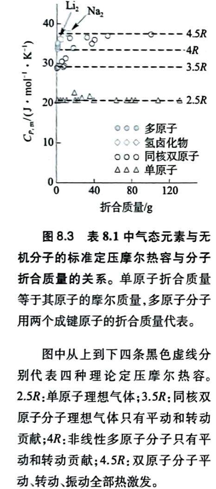
-
单原子分子：\(C_{m,p} = \frac{5}{2}R\)
-
双原子分子：\(C_{m,p} = 3.5R + f(u, k)\)
-
含氢分子：\(u \approx 0\),\(f \approx 0\)
-
其它双原子分子：\(f\) 随 \(u\) 增而增，例如 \(\mathrm{N_2}\)、\(\mathrm{O_2}\)、\(\mathrm{I_2}\)（分子量越大，振动越易激发，\(f\) 越大）
-
活泼\(ⅠA\)族金属双原子分子金属键结合，\(k_{键}\)很小，更快接近低频高温近似值。
-
多原子分子：\(\mathrm{H_2O}\)、\(\mathrm{H_2S}\)、\(\mathrm{H_2Se}\)、\(\mathrm{NH_3}\)，均在\(4R\)附近。
-
有机多原子分子
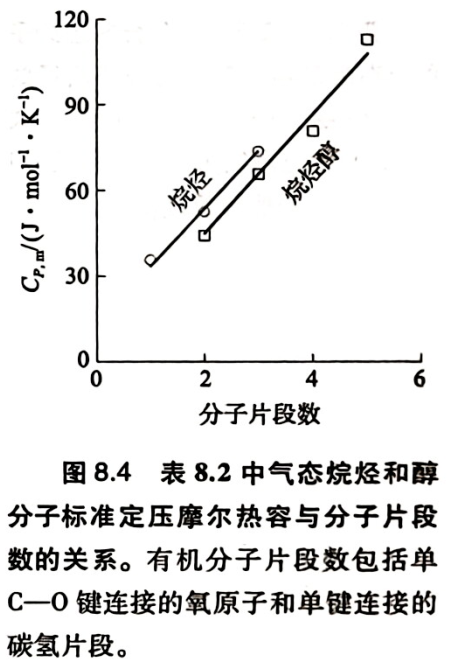
两个线性关系的斜率相等，在 \(20\ \mathrm{J \cdot mol^{-1} \cdot K^{-1}}\) 。该值说明每个单键片段贡献 \(2.5R\) 。
2.3 理想气体标准态摩尔熵
标准态：\(1bar，300K\)
不同理想气体之间摩尔体积相同，不同的只有摩尔质量。重分子平动能级密，可及量子态多。
标准摩尔平动熵：
\[
S_{m(气)}^\circ=109+\frac{3R}{2}\ln M \mathrm{J\cdot mol^{-1}\cdot K^{-1}}
\]
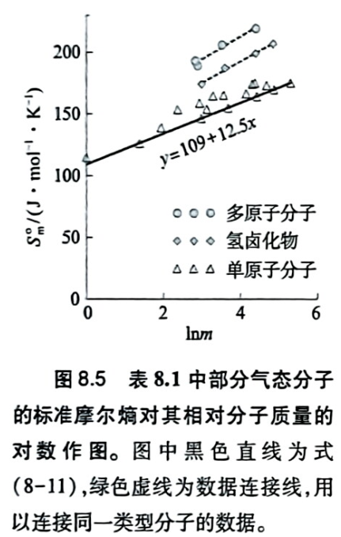
-
单原子实际高出一些，因为存在电子熵（电子层未满即有简并度）
-
双原子氢卤化物：比直线高约 \(33\ \mathrm{J\cdot mol^{-1}\cdot K^{-1}}\)，基本由转动贡献
-
无机多原子分子：比直线高约 \(45\ \mathrm{J\cdot mol^{-1}\cdot K^{-1}}\)
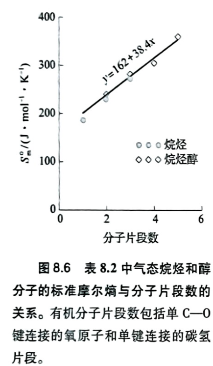
2.4 气体的化学势
纯态：\(\mu = G_m= U_m + (PV)_m - T S_m=U_m - T S_m + RT\)
理想气体：
\[
\mu=\mu^\circ+RT\ln P
\]
Note
\[dG=Vdp-SdT\]
恒温下：
\[
\mathrm{d}\mu = \mathrm{d}G_m = V_m \mathrm{d}P
\]
理想气体 \(V_m = \dfrac{RT}{P}\)，积分：
\[
\int_{\mu^\circ}^{\mu} \mathrm{d}\mu = \int_{P^\circ}^{P} \frac{RT}{P}\,\mathrm{d}P
\]
\[
\mu - \mu^\circ = RT \ln\frac{P}{P^\circ}
\]
\[
\boxed{\mu = \mu^\circ + RT\ln\frac{P}{P^\circ}}
\]
实际气体（气体逸度 \(\alpha\)；逸度系数 \(\gamma\)）：
\[
\mu=\mu^\circ+RT\ln\alpha
\]
\[
\alpha=\gamma P
\]
第三节 纯物质相变热力学
3.1 相平衡
定温定压封闭系统相平衡条件：
\[
\left(\frac{\partial G}{\partial\xi}\right)_{T,P}=0
\]
定义（摩尔）相变吉布斯自由能
\[\Delta_{\text{tr}}G \equiv \left(\frac{\partial G}{\partial \xi}\right)_{T,P}\]
- 与摩尔数无关
- 是一个状态函数
- \(\Delta G \neq \Delta_{\text{trs}}G\)（绝大多数情况下成立）
\[G = n_1 G_{m,1} + n_2 G_{m,2}\]
\[\mathrm{d}\xi = \mathrm{d}n_2 = -\mathrm{d}n_1\]
\[\mathrm{d}G = -S\mathrm{d}T + V\mathrm{d}P\]
\[
\therefore \left(\frac{\partial G}{\partial \xi}\right)_{T,P}
=\left(\frac{\partial(n_1 G_{m,1}+n_2 G_{m,2})}{\partial \xi}\right)_{T,P}
=G_{m,2}-G_{m,1}=\mu_2-\mu_1
\]
平衡时：
\[\Delta_{\text{tr}}G_\text{平衡}=\mu_2-\mu_1=0\]
\[\therefore \mu_2=\mu_1\]
摩尔相变焓、摩尔相变熵均为状态函数，强度性质，三者符合如下（\(G=H-TS\)同时偏导）：
\[\Delta_\text{tr}G =0= \Delta_\text{tr}H - T_\text{tr}\Delta_\text{tr}S\]
平衡时取得：
\[
\Delta_{tr}S_{m}=\frac{\Delta_{tr}H_{m}}{T_{tr}}=-S_{m,分子/液}
\]
3.2 相变数据计算
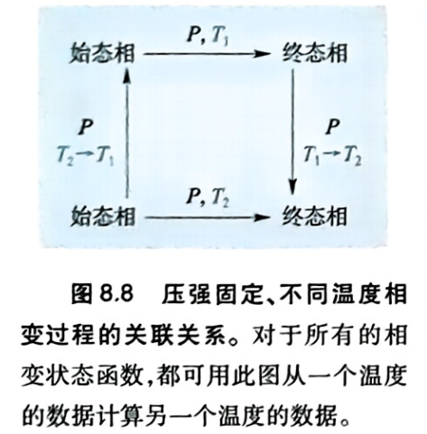
\[\int_{T_2}^{T_1} C_{p,m}(\text{始}) \, dT + \Delta_{\mathrm{tr}} H_m(T_1) + \int_{T_1}^{T_2} C_{p,m}(\text{终}) \, dT - \Delta_{\mathrm{tr}} H_m(T_2) = 0\]
\[
\Delta_{tr}H_m(T_2)=\Delta_{tr}H_m(T_1)+\int_{T_1}^{T_2}\Delta C_{P,m}\,dT
\approx\Delta_{tr}H_m(T_1)+\Delta C_{P,m}\cdot\Delta T
\]
Note
\[\Delta_{\mathrm{tr}} H_m(T) = H_{m,\beta}(T) - H_{m,\alpha}(T)\]
\[\frac{d\,\Delta_{\mathrm{tr}} H_m}{dT} = \frac{dH_{m,\beta}}{dT} - \frac{dH_{m,\alpha}}{dT}\]
\[\frac{d\,\Delta_{\mathrm{tr}} H_m}{dT} = C_{p,m}(\beta) - C_{p,m}(\alpha) = \Delta C_{p,m}\]
\(\Delta C_{p,m}\)为两相定压摩尔热容差。
Note
状态函数法使得某个不可测的相变过程（可以是假想的）变得可以计算。
同理：
\[
\Delta_{tr}S_m(T_2)=\Delta_{tr}S_m(T_1)+\int_{T_1}^{T_2}\frac{\Delta C_{P,m}}{T}\,dT
\approx\Delta_{tr}S_m(T_1)+\Delta C_{P,m}\cdot\ln\frac{T_1}{T_2}
\]
Note
定压熵变：
\[
\Delta S=\int_{T_1}^{T_2}\frac{dH}{T}\,
\]
对于蒸发（远离临界点的温度区间），如果\(T_1 - T_2\) 改变不太大， \(\Delta C_{P,m}\)为常数，上面两式中可以提出。
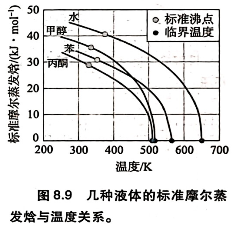
3.3 纯物质相图
任意相：
\[\mu=f(P,T)\]
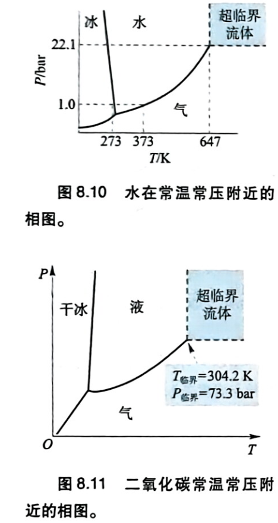
3.4 相区的相对位置
气态总是在凝聚态下方
证明：
\[
\Delta_{\text{tr}} G = \mu_{\text{凝聚}} - \mu_{\text{气}}
\]
平衡点 \(p = p^*\)：
\[
\Delta_{\text{tr}} G = 0
\]
\[
\left(\frac{\partial \Delta_{\text{tr}} G}{\partial p}\right)_T = V_{m,\text{凝聚}} - V_{m,\text{气}}
\]
\[
\because V_{m,\text{气}} \gg V_{m,\text{凝聚}} \quad \therefore \left(\frac{\partial \Delta_{\text{tr}} G}{\partial p}\right)_T < 0
\]
-
\(p > p^*\)， \(\Delta_{\text{tr}} G< 0\) ，凝聚态
-
\(p = p^*\)， \(\Delta_{\text{tr}} G= 0\) ，相平衡
-
\(p < p^*\)， \(\Delta_{\text{tr}} G> 0\) ，气态
固态总是在液态的左方
考虑等压融化过程
\[
\left(\frac{\partial \Delta_{\text{tr}} G}{\partial T}\right)_p = S_{m,\text{液}} - S_{m,\text{凝聚}} > 0
\]
3.5 相图的斜率
在\(P\)–\(T\) 相图，相 1 与相 2 之间的相平衡线上，取两点 \((P,T)\) 与 \((P+dP,\,T+dT)\)
\[\Delta_{\mathrm{tr}}G=0\]
\[
\begin{cases}
d\mu_1=-S_{m(1)}\,dT+V_{m(1)}\,dP\\[4pt]
d\mu_2=-S_{m(2)}\,dT+V_{m(2)}\,dP
\end{cases}
\]
\[d\mu_1+d\mu_2=0\]
代入两式相减：
\[
-(\underbrace{S_{m(1)}-S_{m(2)}}_{\Delta_{\mathrm{tr}}S})\,dT+(\underbrace{V_{m(1)}-V_{m(2)}}_{\Delta_{\mathrm{tr}}V})\,dP=0
\]
即：
\[-\Delta_{\mathrm{tr}}S\,dT+\Delta_{\mathrm{tr}}V\,dP=0\]
克拉伯龙方程：
\[\boxed{\dfrac{dP^*}{dT}=\dfrac{\Delta_{\mathrm{tr}}S}{\Delta_{\mathrm{tr}}V}=\dfrac{\Delta_{\mathrm{tr}}H}{T_{\mathrm{tr}}\,\Delta_{\mathrm{tr}}V}}\]
\(dP^*\):饱和蒸汽压，液或固体与上方蒸汽达到相平衡时，该蒸汽所具有的压力。
气 → 凝聚
\[\Delta_{\mathrm{tr}}V_{\text{气}\to\text{凝}}=-V_{m(\text{气})}=-\dfrac{RT_{\mathrm{tr}}}{P^{*}}\]
克拉伯龙-克劳修斯方程
\[\dfrac{dP}{dT}=\dfrac{P^{*}\left|\Delta_{\mathrm{tr}}H\right|}{RT_{\mathrm{tr}}^{2}}\]
斜率为正且较缓
固 → 液
\[
\frac{dP}{dT}=\frac{\Delta_{trs}S}{\Delta_{trs}V}
\]
其中\(\Delta_{trs}S\)较大。\(\Delta_{trs}V\)对于水小于0接近0。除水外\(\Delta_{trs}V\)大于0接近0。故相变斜率极大。
3.6 相变点
标准态沸点
由相变平衡 \(\Delta_{tr}G_{m}=0\)，得
\[
T_{bp}=\frac{\Delta_{tr}H_{m(bp)}}{\Delta_{tr}S_{m(bp)}}
=\frac{E_{m,分子/液}}{R-\Delta_{tr}S_{m(bp)}}
=\frac{E^0_{m,分子/液}}{-\frac{1+F_{转}}{2}R-\Delta_{tr}S_{m(bp)}}
\]
Note
认为是理想气体，且液体摩尔体积可忽略：
\[
\Delta_{tr}H_m=\Delta_{tr}U_m+\Delta(pV)_m
=-E_{m,\text{分子/液}}+RT
\]
沸点处 \(\Delta_{tr}G_m=0\)，即：
\[
-E_{m,\text{分子/液}}+RT_{bp}
=T_{bp}\Delta_{tr}S_m
\]
\[
\boxed{T_{bp}=\frac{E_{m,\text{分子/液}}}{R-\Delta_{tr}S_m}}
\]
由第7章
\[
E_{m,\text{分子/液}}
\approx E^0_{m,\text{分子/液}}
+(Q_{m,\text{液}}-Q_{m,\text{气}})
=E^0_{m,\text{分子/液}}+\frac{3+F_{\text{转}}}{2}RT
\]
\[
T_{bp}(R-\Delta_{tr}S_m)
=E^0_{m,\text{分子/液}}+\frac{3+F_{\text{转}}}{2}RT_{bp}
\]
\[
\boxed{T_{bp}=\frac{E^0_{m,\text{分子/液}}}{-\frac{1+F_{\text{转}}}{2}R-\Delta_{tr}S_m}}
\]
其中，\(\Delta_{tr}S^\circ_{m(bp)}=85\ \mathrm{J\cdot mol^{-1}\cdot K^{-1}}\)：
\[
T_{bp}(K)=-10.0E^0_{m,分子/液}(\mathrm{kJ\cdot mol^{-1}})
\]
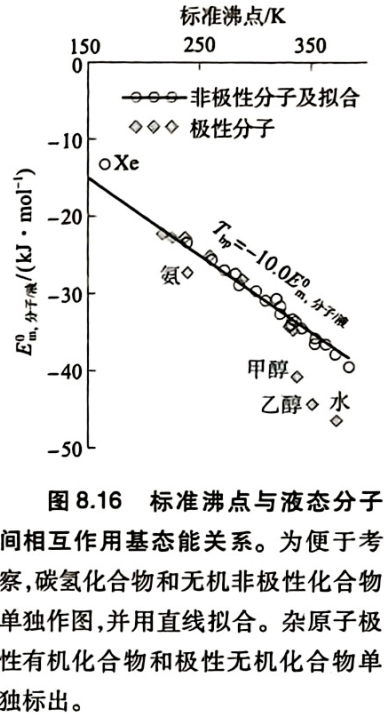
标准态熔点
\[
T_{mp}=\frac{\Delta_{tr}H_{m(mp)}}{\Delta_{tr}S_{m(mp)}}
=\frac{E_{m,分子/液}-E_{m,分子/固}}
{\Delta_{tr}S_{(类振动)}+\Delta_{tr}S_{(定向)}+\Delta_{tr}S_{(分子内振动)}}
\]
其中：
单原子/接近球形的四面体分子（如\(CH_4\)）,无定向熵和分子内振动熵（内振动基本不激发），刚性多原子不考虑分子内振动熵，柔性分子三项均考虑。
3.7 凝聚态的化学势
凝聚态与气态相平衡：
\[
\mu_{凝}=\mu_{气}=\mu^\circ+RT\ln P^*
\]
第四节 液态的量子统计热力学
4.1 摩尔热能
追踪自由度：
\[
Q_{m(液)}=Q_{m(气)}+\frac{3+F_{转}}{2}RT
\]
4.2 液体的定压摩尔热容
假设势阱最低能量（基态能）不随温度变化：
\[
C_{V,m}=\left(\frac{\partial U_m}{\partial T}\right)_V
\]
\[
\boxed{C_{p,m,\text{液}}\approx C_{V,m,\text{液}}=C_{V,m,\text{气}}+\frac{3+F_{\text{转}}}{2}R}
\]
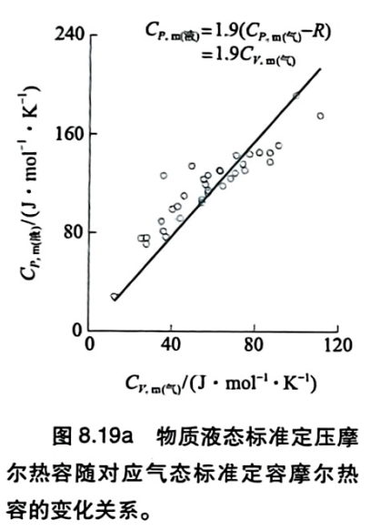
上式对于气体高频低温成立，对于液体而言，需满足：
\[
H_m=U_m+PV_m\approx U_m= U(0)_m+Q_m
\]
其中：
\[
\frac{\partial U(0)_m}{\partial T}=0
\]
并不合理，需要建立更加精确的关系。
热力学恒等式
一般简单可压缩体系的热力学恒等式：
\[
\boxed{C_{P,m}-C_{V,m}=\frac{TV_m\alpha_P^2}{\kappa_T}}
\]
Note
\[
C_V=\left(\frac{\partial U}{\partial T}\right)_V,\qquad
C_P=\left(\frac{\partial H}{\partial T}\right)_P
\]
\[
C_P=\left(\frac{\partial U}{\partial T}\right)_P
+P\left(\frac{\partial V}{\partial T}\right)_P
\]
链式法则：
\[
\left(\frac{\partial U}{\partial T}\right)_P
=\left(\frac{\partial U}{\partial T}\right)_V
+\left(\frac{\partial U}{\partial V}\right)_T
\left(\frac{\partial V}{\partial T}\right)_P
\]
\[
C_P-C_V=
\left[\left(\frac{\partial U}{\partial V}\right)_T+P\right]
\left(\frac{\partial V}{\partial T}\right)_P
\]
由热力学基本方程 \(dU=TdS-PdV\)，以及 Maxwell 关系：
\[
\left(\frac{\partial S}{\partial V}\right)_T
=\left(\frac{\partial P}{\partial T}\right)_V
\]
得：
\[
\left(\frac{\partial U}{\partial V}\right)_T
=T\left(\frac{\partial P}{\partial T}\right)_V-P
\]
即：
\[
\boxed{
C_P-C_V=
T\left(\frac{\partial P}{\partial T}\right)_V
\left(\frac{\partial V}{\partial T}\right)_P
}
\]
利用体膨胀系数和等温压缩率：
\[
\alpha_P=\frac1V\left(\frac{\partial V}{\partial T}\right)_P,\qquad
\kappa_T=-\frac1V\left(\frac{\partial V}{\partial P}\right)_T
\]
由 \(d（lnV）=\alpha_PdT-\kappa_TdP\)，恒容时有：
\[
\left(\frac{\partial P}{\partial T}\right)_V
=\frac{\alpha_P}{\kappa_T}
\]
\[
\boxed{C_P-C_V=\frac{TV\alpha_P^2}{\kappa_T}}
\]
对于理想气体，\(\alpha_P=1/T\)、\(\kappa_T=1/P\)，故 \(C_P-C_V=nR\)，摩尔热容满足 \(C_{P,m}-C_{V,m}=R\)。
液体定压摩尔热容：
\[
\boxed{
C_{P,m,\text{液}}
=C_{V,m,\text{气}}
+\frac{3+F_{\text{转}}}{2}R
+\frac{TV_m\alpha_P^2}{\kappa_T}
+C_{p,m,\text{氢键}}
}
\]
其中三项依次为气相热运动贡献、液相受限振动的额外贡献、恒压膨胀修正。
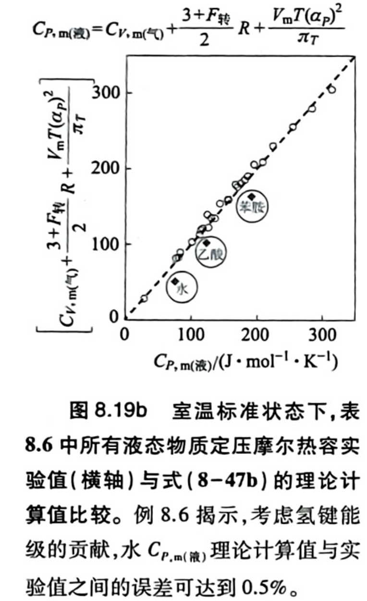
氢键校正
氢键分子以水为例：
单个水分子最多形成4个氢键
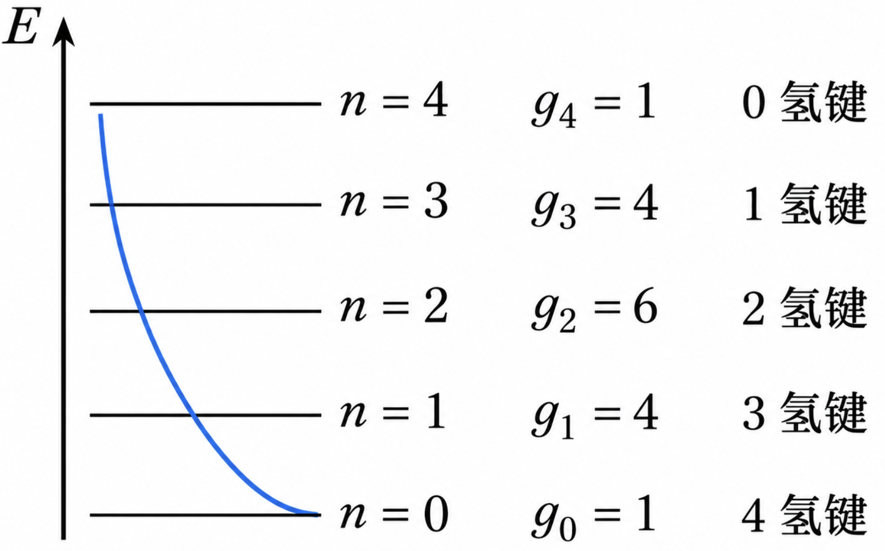
\[q_{\mathrm{氢键}}=\sum_{n=0}^{4}g_n e^{-\frac{n\Delta E}{RT}}\]
中子散射确定，室温水分子平均氢键个数为 \(\mathrm{3.6}\) 个。
平均氢键数为各状态氢键数的概率加权平均：
\[
\overline N_{\text{氢键}}
=\sum_{n=0}^4(4-n)\frac{g_i e^{-n\Delta E/(RT)}}{q_{\text{氢键}}}
=\frac{4}{1+e^{-\Delta E/(RT)}}
\]
\[
3.6=\frac{4}{1+e^{-\Delta E/(RT)}}
\]
\[
\Delta E\approx5.4\ \mathrm{kJ/mol}
\]
Note
由配分函数可求得氢键对摩尔内能的贡献：
\[
U_{m,\text{氢键}}
=RT^2\left(\frac{\partial\ln q}{\partial T}\right)_V
=\frac{4\Delta E}{1+e^{\Delta E/(RT)}}
\]
对温度求导，得到氢键热容修正：
\[
C_{V,m,\text{氢键}}
=4R\left(\frac{\Delta E}{RT}\right)^2
\frac{e^{\Delta E/(RT)}}{(1+e^{\Delta E/(RT)})^2}
\]
\[
C_{V,m,\text{氢键}}\approx14.5\ \mathrm{J\,mol^{-1}K^{-1}}
\]
课堂上给出的是\(21.3\mathrm{J\,mol^{-1}K^{-1}}\)
液态水室温下的定压摩尔热容约为：
\[
C_{P,m}(\text{水})\approx75.3\ \mathrm{J\,mol^{-1}K^{-1}}
\]
4.3 液体的体积摩尔比热
单位体积物质升高单位温度所需要的热量：
\[
\Gamma_V=\frac{C_{P,m}}{V_m}
\]
液体的摩尔体积远小于气体：
\[
\Gamma_{V,\text{气}}\sim\frac{1}{1000}\Gamma_{V,\text{液}}
\]
溶剂吸收反应释放的热量，产生正的熵变，从而补偿反应物结合所造成的熵减。
4.4 体积
\[
V_m=\left(\frac{\partial G_m}{\partial P}\right)_{T,n}=\left(\frac{\partial H_m}{\partial P}\right)_{T,n}
-T\left(\frac{\partial S_m}{\partial P}\right)_{T,n}
\]
对于理想气体，焓仅与温度有关：
\[
\left(\frac{\partial H_m}{\partial P}\right)_{T,n}=0
\]
\[
\boxed{
V_m=-T\left(\frac{\partial S_m}{\partial P}\right)_{T,n}
}
\]
对于液体，根据 Maxwell 关系：
\[
\left(\frac{\partial S_m}{\partial P}\right)_{T,n}
=-\left(\frac{\partial V_m}{\partial T}\right)_{P,n}
\]
由于凝聚态物质的热膨胀通常较小，近似：
\[
\left(\frac{\partial V_m}{\partial T}\right)_{P,n}\approx0
\]
\[
\boxed{
V_m\approx\left(\frac{\partial H_m}{\partial P}\right)_{T,n}\approx\left(\frac{\partial U_m}{\partial P}\right)_{T,n}
}
\]
第五节 固体的量子统计热力学
Caution
经典能量均分定理认为能量连续，必要条件如下：
\[
\boxed{k_BT\gg\Delta E}
\]
此时级数和才能近似为积分，能量均分成立，每个二次型能量项平均贡献 \(\frac12 k_BT\)。
然而对于低温高频的情况能量均分无法解释，而量子统计则可以通过级数求和的方式给出精确热能贡献。
5.1 摩尔热能、摩尔内能与爱因斯坦关系式
固体的摩尔内能：
\[
U_{m,\text{固}}=Q_{m,\text{固}}+U_m(0)
\]
对于\(\mathrm{1mol}\) 原子共有 \(3N_A\) 个振动模式：
\[
U_{m,\text{固}}=\sum_{j=1}^{3N_A}Q_j+U_m(0)
\]
爱因斯坦模型假设所有原子均以相同频率 \(\nu_E\) 进行独立简谐振动（均为低频，室温下高温低频近似）
振动热能：
\[
\overline Q=\frac{h\nu_E}{e^{h\nu_E/(k_BT)}-1}
\]
固体摩尔内能为：
\[
U_{m,\text{固}}
=U_m(0)+\frac{3N_Ah\nu_E}{e^{h\nu_E/(k_BT)}-1}
\]
爱因斯坦方程：
\[
\boxed{
C_{V,m}
=3R\left[
\frac{h\nu_E/(k_BT)}
{e^{h\nu_E/(2k_BT)}-e^{-h\nu_E/(2k_BT)}}
\right]^2
}
\]
\[
C_{V,m}
=3R\frac{x^2e^x}{(e^x-1)^2},
\qquad
x=\frac{h\nu_E}{k_BT}
\]
高温极限（\(k_BT\gg h\nu_E\)）：
\[
C_{V,m}\longrightarrow3R=25\mathrm{J/mol·K}
\]
低温极限（\(k_BT\ll h\nu_E\)）：
\[
C_{V,m}\approx3Rx^2e^{-x}
\]
\[
C_{V,m}\longrightarrow0
\]
5.2 固体的定压摩尔热容
\[
C_{P,m,\text{固}}
=\sum_{j=1}^{3N_A}
\frac{
k_B\left(\frac{h\nu_j}{k_BT}\right)^2
}{
\left(e^{\frac{h\nu_j}{2k_BT}}-e^{-\frac{h\nu_j}{2k_BT}}\right)^2
}
+\left(\frac{\partial U_m(0)}{\partial T}\right)_P
\]
\[
C_{P,m,\text{固}}
=\sum_{j=1}^{3N_A}
\frac{
k_B\left(\frac{h\nu_j}{k_BT}\right)^2
}{
\left(e^{\frac{h\nu_j}{2k_BT}}-e^{-\frac{h\nu_j}{2k_BT}}\right)^2
}
+\frac{V_mT\alpha_P^2}{\kappa_T}
\]
Note
键力常数 \(k\) 越大 → 势阱底部曲率越大（更陡峭、狭窄） → 振动频率 \(\omega=\sqrt{k/\mu}\) 越高 → 振动能级间隔 \(\Delta E=\hbar\omega\) 越大 → 相同温度下越难被热激发 → 量子冻结越明显，振动热容越小。
| 物质 |
\(C_{P,m}\) / (\(\mathrm{J\cdot mol^{-1}\cdot K^{-1}}\)) |
| \(\mathrm{C}\) |
6.1 |
| \(\mathrm{Cs}\) |
32.2 |
| \(\mathrm{BaCO_3}\) |
86 |
单原子固体
低频高温近似：对多数单原子金属和离子晶体成立，对力常数较大的小原子误差大（如碳单晶）。
共价分子或基团
\[
C_{P,m}(\mathrm{BaCO_3})\neq 3R\times5
\]
其中碳酸根共价部分存在误差
5.3 固体的摩尔熵
热力学第三定律，完美晶体在绝对零度时熵为零：
\[
\lim_{T\to0}S_m=0
\]
由可逆过程的熵定义及恒压摩尔热容：
\[
dS_m=\frac{\delta Q_{\mathrm{rev},m}}{T},
\qquad
\delta Q_{\mathrm{rev},m}=C_{P,m}\,dT
\]
\[
dS_m=\frac{C_{P,m}}{T}\,dT
\]
\[
S_m(T)-S_m(0)=\int_0^T\frac{C_{P,m}(T')}{T'}\,dT'
\]
\[
\boxed{
S_m(T)=\int_0^T\frac{C_{P,m}(T')}{T'}\,dT'
}
\]